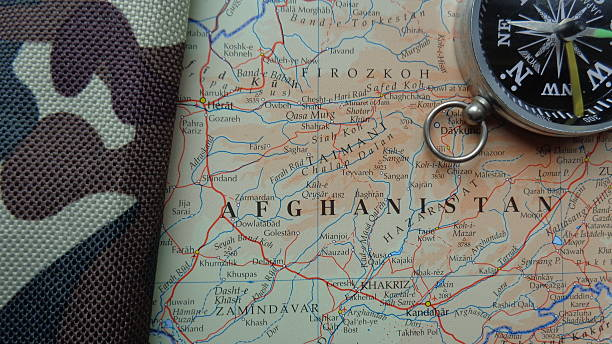

What is Climate Change?
Climate change, on the other hand, is a long-term change in the Earth’s weather patternsbrought on by those same greenhouse gas emissions. While climate changeincludes rising global temperatures, it also comprises of many other impacts those greenhouse gases are having on the planet, which even includes some regions getting colder!
Just as fluctuations in Earth’s temperature is natural, a changing climate is a natural aspect of life on Earth. Systems like El Niño and La Niña can cause dramatic fluctuations in weather across large areas of the plant for months or even years. However, the term climate change refers to unexpected, abnormal, and longer-term changes brought on by human activity.
The effects of climate change include a broad range of changes, which, over the last century, have become undeniable. There have been more droughts, floods, and heatwaves, sea levels have risen, biodiversity has been lost, and wildfires and hurricanes have become more intense than ever before. All of which point to a dramatically and rapidly changing climate.

© climate.nasa.gov
Afghanistan Climate
Afghanistan has a unique geography, ranging from the glaciered peaks of the Hindukush to the arid deserts of the South, covering altitudes from over 7,000 m.a.sl. down to under 250 m.a.sl. It is a landlocked country, located between 29-37° north, and its main geographical features are the very pronounced topography which are part of the Hindukush. These geographic features result in a generally dry and very characteristic continental climate. It is only influenced partly by the Indian sub-continent monsoon from the southeast, bringing moist maritime air in the summer. The majority of the country generally experiences cold winters and hot summers. Temperature ranges vary with elevation. This variation holds not only for the annual cycle but also within one day; temperatures often vary considerably from very cold nights to very hot days. Precipitation is mainly limited to the months between October and May, whereas the arid deserts receive less than 100 mm and in the mountains, mean annual precipitation is considerable above 1000 m.a.sl. In the mountains, most precipitation falls as snow during winter.
Afghanistan’s variety of different climates has a large natural variability; however, over recent decades people are beginning to perceive climatological changes. There are very few scientific studies on climate change in Afghanistan. Analysis of past climate and future climate projections for Afghanistan only exist from a study of the Tyndell Center for UNDP and DFID country profiles1,2 of which results are also published in a study of the Stockholm Environmental Institute (SEI)3 on the socio-economic impacts on climate change from 2009. The analysis of the past is based on observations of station data which have large gaps, especially after 1970. The projections are based on the third generation of Global Climate Models (GCM) generated within the Coupled-Model Intercomparison Project (CMIP). They have a grid size of 2.5°, which means that Afghanistan is covered by a total of 19 cells. Regional climate models (RCM) or statistically downscaled GCMs have not been evaluated for Afghanistan comprehensively. In regard of its distinguished topography, a finer grid might bring new insights on climate trends for the future.
© Islamic Republic of Afghanistan National Environmental Protection Agency

© wallpaper flare
why climate change is a big Issue in afghanistan
afghanistan is a developing country which is surrounded by mountain have big rivers and wide landscape the most people in afghanistan are formars and agriculture is the only living way for them but for a few years by the impact of climate change alots of lands are destroyed by floods and by increasing temperature and less raining alots of lands are dry by lack of water so its is the atleast problem of climate change in afghanistan the main problem is air pollution that is increasing day by day and alots of other Issues of climate change in afghanistan create a big broblem for peoples and also other living creatures so its is our dutiy to act in time by a small step we can together we can create a big impact on our Environment climate change is not just a local problem to avoid it is like a sunami that will take all of us to disasters so let save our one and only planet let fight this big crisis togrther.

Weather and Climate
Weather is commonly defined as the state of the atmosphere at a given time and place with respect to variables such as temperatures, moisture, wind velocity, and barometric pressure. Climate in contrast is the “average weather,” and is defined as the measurement of the mean and variability of the weather over a period of time, ranging from months to thousands or millions of years. The classic period of measurement is 30 years, as defined by the World Meteorological Organization (WMO). Climate in a wider sense is the state, including a statistical description, of the climate system. Hence, when we compare two 30-year periods of weather observations, we compare the climate and if there are changes, we may refer to them as climatic changes
© Islamic Republic of Afghanistan National Environmental Protection Agency

© weADAPT
what is in for you
this page is design for providing some importent information about the climate change in afghanistan and global. if you want to find some specific information are just want to increase your knowledged about climate change specifically in afghanistan so you should definitly try it ones so dive in.....
here are some you tube video links about climate changes checked out
Climate Change threaten Afghanistan Crumbling HeritageEducate Afghan Women Offer economic resilience In The Face Of Climate Change
Causes and effects Of Climate Change National geographic Channel